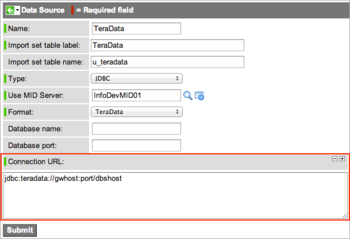

Adding JDBC Drivers for Unsupported Data Sources
From ServiceNow Wiki
Home > Administer > Managing Data > Import Sets > Adding JDBC Drivers for Unsupported Data Sources (Redirected from Adding JDBC Drivers for Data Sources not Supported in Out-of-Box Systems)
Contents
1 Overview
Use the following procedure to extend the data source to use a driver for a database that is not provided in the base system. JDBC connections are supported for the following default databases:
| SQL Server Type | Port |
| MySQL | 3306 |
| MS SQL Server | 1433 |
| Oracle | 1521 |
| Sybase | 5000 |
| DB2 Universal | > 50000 |
2 Task 1: Add the Driver to the MID Server
Add the new JDBC driver JAR file to the MID Server using this procedure.
- Navigate to MID Server > JAR Files.
- Click New.
- Complete the following fields:
- Name: A unique and descriptive name for identifying the file in the instance.
- Version: A version number for the file, if one is available.
- Source: Location of the JAR file for reference purposes. Source information is not used by the system.
- Description: Short description of the JAR file and its purpose in the instance.
- Click the paper clip icon in the banner and attach the JAR file to the record.
- Click Submit.
- Restart the MID Server service.
- The platform makes the JAR file available to any MID Server configured to communicate with the instance.
{kind=link}
3 Task 2: Edit the Choice List
Extend the available JDBC driver options by creating a new Choice list entry to specify the JDBC driver java package name. Add a new Choice List entry for the new database to the Format field in the sys_data_source table.
- Navigate to System Import Sets > Administration > Data Sources.
- Click New in the record list.
- In the Data Sources form, right-click the Format field label, and select Show Choice List from the pop-up menu.
- Click New in the list of Choices.
- Provide the following values to create the new database choice. Look at the existing drivers for examples.
- Table: sys_data_source
- Label: Database name that appears as an option in the Format choice list, for example: TeraData.
- Value: Package name and class of the driver. For example, the value for TeraData is com.ncr.teradata.TeraDriver.
- Dependent value: JDBC
- Click Submit.
- The new data source now appears in the list of available JDBC formats.
{kind=link}
{kind=link}
4 Task 3: Create a New Data Source
Create a record for the new data source.
- Navigate to System Import Sets > Administration > Data Sources and click New.
- In the Data Source form, select JDBC from the list in the Type field.
- Select the new data source from the choice list in the Format field.
- Configure the form and add the Connection URL field.
- Provide the connection URL to the JDBC data source, and then click Submit.
- No other connection information is required.
- 
{kind=link}
{kind=link}
Was this article helpful?
Yes, I found what I needed
No, I need more assistance